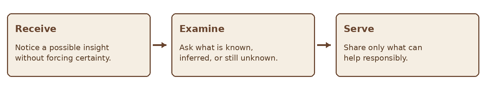
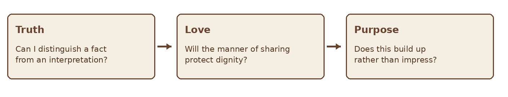
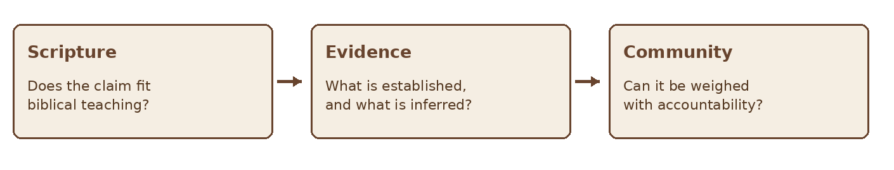

GIFTS OF THE HOLY SPIRIT · BIBLE STUDY
The Gift of Knowledge
A Bible study on Spirit given insight, truth, and responsible speech
STUDY TWO • KNOWLEDGE
“For to one is given through the Spirit the message of wisdom, and to another the message of knowledge according to the same Spirit.” — 1 Corinthians 12:8
Paul names a “message of knowledge” among the Spirit’s manifestations for the common good. This study explores what the passage establishes, what remains open to interpretation, and how a claimed insight can be shared without making assumptions about another person. It follows the same pattern as the Wisdom study: Scripture, purpose, responsible practice, testing, and reflection.
Scripture at a Glance
| Passage | Contribution to the study |
|---|---|
| 1 Corinthians 12:4–11 | The Spirit distributes gifts for the common good; verse 8 names a message of knowledge. |
| 1 Corinthians 8:1–3 | Knowledge without love can become prideful; love shapes its use. |
| 1 Corinthians 13:2, 8–12 | Even remarkable knowledge is partial and must be held humbly. |
| Colossians 1:9–10 | Paul prays for knowledge of God’s will that bears fruit in a worthy life. |
| 1 Thessalonians 5:19–22; 1 John 4:1 | Spiritual claims are to be tested. |
| Acts 5:1–11; John 4:16–19 | Narratives sometimes cited in discussion, though neither identifies the event by Paul’s term. |
1 What Is a Message of Knowledge
The phrase in 1 Corinthians 12:8 is translated “word of knowledge” or “message of knowledge.” Paul states that it is given through the Spirit, but he does not define its content or give a procedure for recognizing it. Some Christians understand it as Spirit enabled insight into a person or situation that the speaker could not have learned ordinarily. Others emphasize a Spirit given grasp or communication of revealed truth. The verse alone does not settle every detail of these views.
In either reading, the purpose of a gift in this chapter is service. A claim to know something should direct attention to truth and the good of others, not to the status of the person speaking. Ordinary learning, observation, and research are also valuable; a person should not label every accurate deduction a supernatural message.

Figure 1 A careful path from possible insight to service
2 Knowledge and Wisdom
Paul places wisdom and knowledge side by side in 1 Corinthians 12:8 without defining a rigid boundary between them. A useful working distinction is that knowledge concerns what is true or known, while wisdom concerns fitting application. This distinction helps discussion, but it should not be presented as Paul’s complete definition of either gift.
| Question | Knowledge | Wisdom |
|---|---|---|
| Primary focus | What is true or relevant? | What is the faithful response? |
| Possible service | Clarifies a matter needing attention. | Guides action in light of truth. |
| Shared requirement | Love, humility, testing. | Love, humility, testing. |
3 Knowledge Must Be Governed by Love
In 1 Corinthians 8, Paul warns that knowledge can puff up while love builds up. In 1 Corinthians 13, even extensive knowledge means little without love, and human knowledge remains partial. These passages do not dismiss knowledge; they govern its use. A true statement can still be delivered carelessly, at the wrong time, or to the wrong audience.
Before sharing something personal, consider whether it is necessary, whether it is your place to say it, and whether a private conversation would protect the person involved. Never use a claimed revelation to embarrass someone publicly, compel a confession, or bypass ordinary safeguards.

Figure 2 Three questions before speaking
4 What Biblical Narratives Can and Cannot Show
Jesus’ conversation with the Samaritan woman in John 4 includes knowledge of her life that prompts her to consider who he is. Acts 5 describes Peter confronting Ananias and Sapphira about deceit. These are biblical narratives of particular people and events. Neither text calls the incident “the word of knowledge,” so they may illustrate possible discussion points but cannot by themselves define the gift in 1 Corinthians 12:8.
Jesus’ unique identity also matters when reading the Gospels. Do not assume that every action Jesus took establishes an ordinary ability or authority for every believer. Read each narrative in its own setting before applying it to contemporary experience.
5 Distinguish Observation from Interpretation
A strong impression may contain a useful concern without a reliable explanation. If someone senses that a person is struggling, the appropriate response may be a gentle question or an offer to pray, not an announcement of what caused the struggle. The more specific a claim becomes, the more carefully it should be tested.
| Layer | Example | Appropriate response |
|---|---|---|
| Observation | “You seemed quiet today.” | Ask how the person is doing. |
| Impression | “I wonder whether something is weighing on you.” | Offer it tentatively and allow correction. |
| Unverified conclusion | “God showed me the cause of your problem.” | Withhold the claim until there is sound basis; do not pressure the person. |
6 Test a Claimed Word of Knowledge
Compare the content with Scripture and established facts. Ask whether it is consistent with Christlike character and whether mature believers can help weigh it. A claim about another person’s private life deserves particular care: do not spread it, investigate intrusively, or treat it as proven merely because it felt vivid.

Figure 3 A responsible test of a knowledge claim
A mistaken impression does not need to become a crisis of identity. Acknowledge the error, repair harm if necessary, and learn from it. The willingness to be corrected is part of speaking truthfully.
7 A Practical Reflection Journal
Use these prompts when an insight seems significant. Write before discussing it with others so that later facts do not overwrite your original memory.
| Prompt | Record |
|---|---|
| What did I notice? | Describe the experience without explaining its source. |
| What do I actually know? | Separate facts from memories, inference, and assumptions. |
| What are other explanations? | Consider ordinary possibilities and missing information. |
| Who could be affected? | Consider privacy, dignity, and foreseeable harm. |
| How should I respond? | Choose prayer, a gentle question, counsel, or waiting. |
| What happened later? | Record correction and what the outcome taught you. |
Reflection and Discussion
- How might knowledge become a source of pride rather than service?
- When is a gentle question better than a confident statement?
- How can 1 Corinthians 8 and 13 shape the way I share what I think I know?
- What kind of accountability would help me handle a personal impression responsibly?
A Prayer for Truth and Love
Father, teach me to love truth and the people to whom I speak. If Your Spirit brings something to my attention, give me patience to test it and wisdom about whether to speak. Guard me from pride, assumption, and careless words. Help me admit mistakes, protect the dignity of others, and use whatever knowledge You give for the common good. Amen.
Further Study
Read 1 Corinthians 8:1–3 and chapters 12–14 in full. Compare the purpose of knowledge in Colossians 1:9–10 with the humility of partial knowledge in 1 Corinthians 13:8–12. Read John 4 and Acts 5 in context, noting what each passage says and what it does not say about the gift.